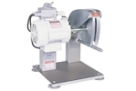
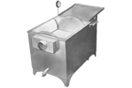
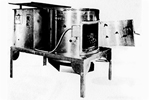

In addition to our Kent Picking Fingers we also sell:
Biro
BCC-100 Poultry Cutter
Cut chicken, turkey, duck, fish, and rabbit all day with the Biro BCC-100 Poultry Cutter. The special 9” cutting blade lets you cut pieces accurately while providing minimal tearing of the skin. You achieve almost no cutting loss and almost no product shrink. Since the blade is designed to slice instead of tear product tissue, your shelf life is maximized.
Ashley
Sure-Scald
Available in three sizes
Built for Maximum Scalding Capacity with Minimum Labor.
The Ashley Sure-Scald incorporates many features which eliminate unnecessary, time consuming motions from the scalding job. Designed for large production in limited space-no shackles or conveyor needed. Birds are not confined, but tumble freely, thus insuring a thorough scald. The Accurate Timing Device and Sensitive Thermostat eliminate guesswork. Inner Tank is constructed of 10-ga. and 3/16" steel, hot-dip galvanized. Available in three sizes
Ashley
Sure-Pick
Available in three sizes
Proven Performer Worldwide For Over 40 Years
These reliable Ashley Sure-Picks are unexcelled in quality and service. They are available in three sizes: Model SP-23, SP-30 and SP-38. They will pick to perfection, fryers, fowl, game birds and Turkeys. Ashley Machine Company has been manufacturing quality poultry dressing equipment for over 40 years, and feels that the Sure-Pick is one of the leaders of their complete line of dressing equipment.